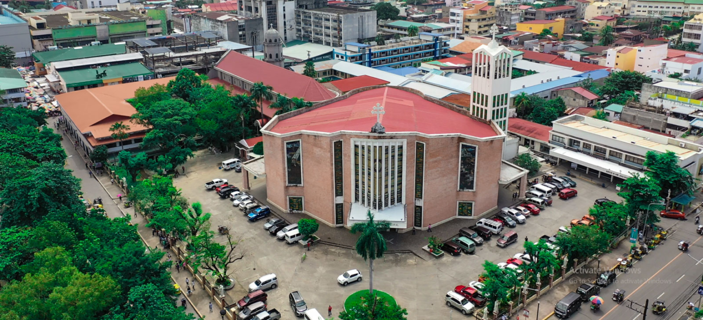

Geographical Location

Pangasinan is located in the western part of Luzon, Philippines. It faces the West Philippine Sea and is known for its long coastline, beautiful beaches, and island destinations.
The province is bordered by:
- La Union to the north
- Benguet to the northeast
- Nueva Vizcaya to the east
- Tarlac to the south
- Zambales to the southwest
Because of its coastal location, Pangasinan became an important center for fishing, tourism, trade, and transportation in Northern Luzon.
Major Cities & Towns

Dagupan City
Known as the “Bangus Capital of the Philippines,” Dagupan is famous for milkfish production and local cuisine.
Alaminos City
The gateway to the famous Hundred Islands National Park and one of the province’s top tourist destinations.
Lingayen
The capital town of Pangasinan, known for its beaches, history, and the historic Lingayen Gulf.
Why Its Location Matters
Pangasinan’s location gives visitors easy access to beaches, islands, waterfalls, historical landmarks, and cultural attractions. Its position along the coast also provides breathtaking sunsets and rich marine resources that support local communities.
Back to About